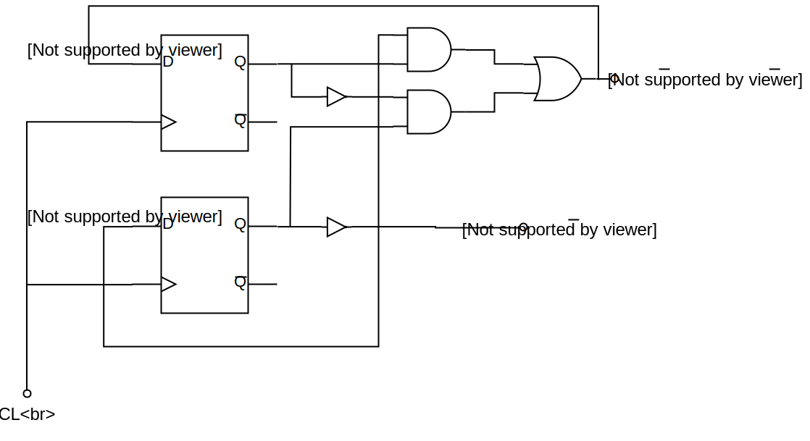
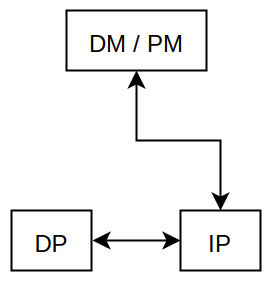
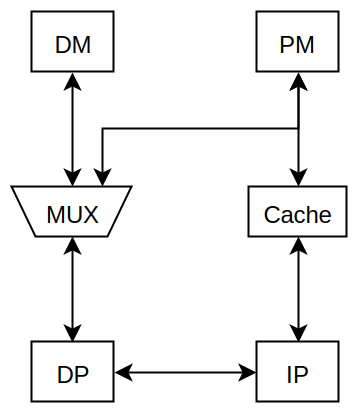

Abbildung 2: Dekodierlogik des Steuersignals
aus der Vorlesung Rechnertechnik vom 22.03.2018
Frage: Wieviele Durchläufe sind im Mittel erforderlich?
Wir haben gesehen:
Also: nach dem -ten Durchlauf sind Bits mit belegt.
Im Mittel ist der von-Neumann-Additionsalgorithmus beendet, wenn
oder
ist.
Fazit: Das von-Neumann-Addierwerk benötigt im Mittel also nur Durchschaltzeiten eines Halbaddierers, um eine Summe zu berechnen.
Der Takt muss nur ein wenig länger sein als die Durchschaltzeit eines Halbaddierers .
Gegenüber dem zuerst betrachteten Addierwerk mit Durchschaltzeiten eines Volladdierers pro Addition sind Durchschaltzeiten eines Halbaddierers eine enorme (exponentielle) Beschleunigung; Außerdem werden nur Halbaddierer anstelle Volladdierer benötigt.
Anmerkung: Es gibt noch eine Vielzahl weiterer Additionsverfahren für Dualzahlen, die noch schneller sind als der von-Neumann-Algorithmus; diese benötigen aber viel mehr zusätzliche Hardware, z.B. zur schnelleren Berechnung des Übertrags, der sich dann nicht mehr durch eine Folge von Addierern fortpflanzen muss, sondern durch eine spezielle Hardware direkt berechnet wird (Carry Look Ahead).
Das Steuerwerk des Befehlsprozessors hat die Aufgabe, die Ausführung der Maschinenbefehle zu steuern. Dabei müssen Steuersignale erzeugt werden, die zeitlich passend zum ausführenden Maschinenbefehl bestimmte Teile des Datenprozessors, des I/O-Prozessors und des Arbeitsspeichers beeinflussen. Dabei werden Maschinenbefehle dekodiert und in unterschiedlichen Zeitphasen ausgeführt.
Um die Zeitphasen während der Ausführung eines Befehls zu erkennen, hat jeder Prozessor einen Taktgeber oder auch Clock. Der Taktgeber gibt mit dem Takt die kleinste Zeiteinheit (Zeitscheibe) an, in welcher sich Zustände im Rechner ändern können. Allerdings dauern die Ausführungsphasen in der Regel mehrere Takte.
Um innerhalb der Ausführungsphasen spezielle Zeitpunkte, z.B. zur Erzeugung eines Steuerbefehls, zu bestimmen, werden spezielle Schaltwerke eingesetzt, die so genannten Ringzähler.
Man nehme beispielsweise an, dass in einem Rechner bestimmte Befehle mit Zeitphasen von 4 Takten arbeiten. Dazu wird ein Ringzähler modulo 4 eingesetzt, der ermöglicht, den 0., 1., 2., und 3. Takt dieser Zeitphasen zu erkennen.
Dazu folgende Wahrheitstabelle:
| Takt | ||||
|---|---|---|---|---|
entsprechendes Schaltnetz:

Abbildung 1: Schaltnetz eines Ringzählers
modulo 5 Ringzähler:
| Takt | ||||||
|---|---|---|---|---|---|---|
Soll nun ein Steuersignal zu einem ganz bestimmten Takt aktiv werden, so kann dies mittels des Ringzählers und einer zusätzlichen Dekodierlogik realisiert werden.
Zum Beispiel kann mit nachfolgender Schaltung das Steuersignal nur in Takt aktiv werden:
Abbildung 2: Dekodierlogik des Steuersignals
Jeder Maschinenbefehl ist in einer einzigartigen Bitkombination kodiert. Somit kann eine Dekodierlogik konstruiert werden, mit der alle Maschinenbefehle eindeutig unterschieden werden können. Zum Beispiel kann als Ausgang der Dekodierlogik für jeden Befehl eine eigene Steuerleitung existieren, deren Pegel ist, wenn der Befehl erkannt wurde.
Beispiel: Betrachte Dekodiereinrichtung für 4 Maschinenbefehle

Abbildung 3: Schaltnetz einer Dekodiereinheit
Mit Hilfe des Ringzählers können nun die notwendigen Steuersignale zur Ausführung eines bestimmten Befehls zum richtigen Zeitpunkt ausgeführt werden, indem das Signal aus dem Befehlsdekodierer zur richtigen Zeit als Steuersignal an die Hardware weitergeleitet wird.
Dies könnte zum Beispiel so realisiert sein, dass zu jedem dekodierten Maschinenbefehl eine separate Hardware zur Erzeugung der Steuersignale verwendet wird. Bei realen Prozessoren gibt es natürlich gleichzeitig ausgeführte Steuersignale bei unterschiedlichen Maschinenbefehlen.
Beispiel: Erzeugung von Steuersignalen für 4 Maschinenbefehle

Abbildung 4: Schema zur Erzeugung von 4 Maschinenbefehlen
Zur Erinnerung: Rechnerarchitekturen nach dem von-Neumann-Konzept sind gekennzeichnet durch einen gemeinsamen Hauptspeicher für Programmdaten und Verarbeitungsdaten. Die Architektur besteht vereinfacht aus drei Einheiten. Der genannte Hauptspeicher fasst Datenspeicher (Data Memory (DM)) und Programmspeicher (Program Memory (PM)).
Wesentlich ist, dass zu einer Zeit nur ein Zugriff auf den Hauptspeicher erfolgen kann; somit kann zu einer Zeit entweder ein Befehl (Programmdaten) oder ein Operand (Verarbeitungsdaten) aus dem Hauptspeicher geladen werden. Der Befehlsprozessor (Instruction Processor (IP)) ist dafür zuständig, die Maschinenbefehle einschließlich Operanden aus dem Hauptspeicher zu laden und zu dekodieren. Die Ausführung des Befehls erfolgt durch den Datenprozessor (Data Processor (DP)), der dafür unter anderem eine ALU enthält.

Abbildung 5: Die von-Neumann-Architektur
von-Neumann-Konzept
Um die oben genannten Beschränkungen der von-Neumann-Architektur zu umgehen, bedient man sich der Harvard-Architektur, bei der Datenspeicher (DM) und Programmspeicher (PM) als separate Speicher organisiert sind.

Abbildung 6: Die Harvard-Architektur
Klassische Harvard-Architektur
Hier kann zu einer Zeit ein Befehl durch den Befehlsprozessor und ein Operand durch den Datenprozessor geladen werden.
Die klassische Harvard-Architektur wurde durch eine architektonische Maßnahme erweitert, die es dem Datenprozessor ermöglicht, direkt auch auf den Programmspeicher zuzugreifen, um beispielsweise Filterkoeffizienten zu laden. Die zusätzliche Hardware ist ein Multiplexer (MUX).

Abbildung 7: Modifizierte Harvard-Architektur
Um den Durchsatz an Instruktionen noch mehr zu steigern, wurde eine weitere Optimierung durch zusätzliche Hardware vorgenommen. Es wurde zusätzlicher Cache-Speicher am Befehlsprozessor integriert.

Abbildung 8: Modifizierte Harvard-Architektur mit Cache
Die Modifizierte Harvard-Architektur und die Modifizierte Harvard-Architektur mit Cache findet man hauptsächlich bei Digitalen Signal-Prozessoren (DSPs).